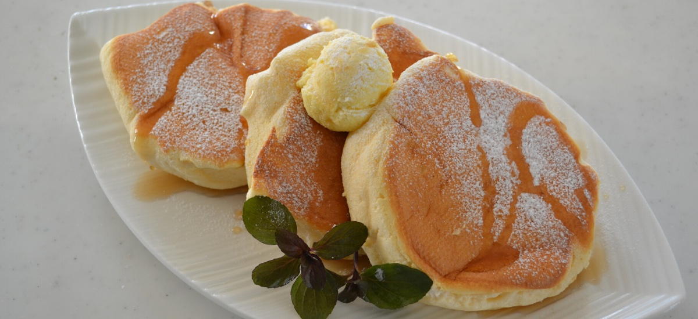

Japanese Pancakes

Tall, Fluffy, Pillowy, Heavenly delicious Pancake!
Ingredients
Meringue
- 1 tbs sugar (1 heaping tablespoon, 20g)
- 2 egg white (70g)
Batter
- 1 egg yolk
- 1 tsp sugar (5g)
- 2 tbs whole milk (20g)
- 1 tbs vegetable oil ( neutral flavor ) (10g)
- 3 tbs all-purpose flour (30g)
- ⅓ tsp baking powder
- a pinch of salt
- a dash of vanilla paste or essence
Whipped honey butter
- 2 tbs room temperature butter
- 1 tbs good quality honey
Instructions
- Preheat the electric griddle to 140℃.
- Whisk room temperature butter and honey well.
Batter
- Whisk egg yolk and sugar well until pale. Add milk and vegetable oil in 2 to 3 stages, whisk well each time.
- Shift together the flour and baking powder. Whisk well until sticky. Add in vanilla and salt. Set aside.
Meringue
- Whisk egg white on low until start making form. Add sugar in 2 stages. Whisk until the sugar dissolves.
- Increase the speed to high, whisk until stiff peak forms.
Assemble
- Add a scoop of meringue into the batter. Whisk until well combine. The first scoop of meringue is called "sacrifice meringue". It makes easier and faster the mixing process.
- Add the rest of the meringue in 2 stages and mix until just combine with a whisk.
- Switch to spatula, fold the mixture a few times to make sure it's mixed thoroughly.
- Grease the surface of the electric griddle, and ladle the mixture. Cover with the lid, cook 3 mins.
- Flip, cook 3 mins. on the other side.
- When you touch the center of the pancake and it's bounce back, it's OK to go!
- Take out onto a dish, serve immediately with whipped honey butter and warm maple syrup.